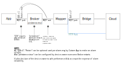

Introduction
That document specifies alarm handling for thin-edge.
Data Semantic of Alarms
Thin-edge treats alarms as stateful signals. Instead to usual cyclic measured values (as e.g. measurements of physical units like temperature, humidity, pressure, ...) a stateful signal is transferred only on state-change. If such a transferred state-change got lost, the cloud assumes the wrong state until a next state-change occurs. Especially in case of alarms that means a once raised alarm would completely be unknown to the cloud.
A lost alarm-raise could be even more problematic if the raised alarm requires some cloud-site interaction (or manual interaction). Since the lost alarm is not visible on cloud no interaction will be started. And since no state-change happens again, the alarm will never appear at cloud.
Consequence:
All alarm state-changes need to be transferred reliable from Application to thin-edge, and from thin-edge to cloud.
I.E., alarm state-changes must not got lost, or device software must be able to detect loss and react accordingly (e.g. retry to transfer).
Information Set per Alarm
The specified alarm attributes below are inspired by cumulocity data model for alarms, but shall be re-usable for other clouds where possible.
| Name | Description |
|---|---|
| type-string | Device-unique type string (kind of alarm ID or alarm name), used to reference the once occurred alarm again, e.g. in case of updates (e.g. "temperature_sensor_loss") |
| text-string | Human readable short information about alarm reason (e.g. "Temperature sensor does not respond") |
| severity-string | Could be "CRITICAL", "MAJOR", "MINOR" or "WARNING" |
| status-string | Could be "ACTIVE" or "CLEARED" |
| time-string | Timestamp indicating when the alarm (or the alarm-update) had occurred (in ISO 8601 format) |
Data flow
Figure below illustrates the data flow from Customer Application broker/thin-edge up to cloud. It shows especially the use of MQTT QOS=1, MQTT Retain and Mosquitto Persistence to achieve reliability alarm state-change transfer.

To be decided: Interface from Mapper to Cloud to be defined. Two options are possible:
- JSONviaMQTT: To have reliability use QOS=1. Open issue: Not yet completely confirmed that C8Y sends PUBACK when msg was processed, instead just on arrival.
- HTTP REST: HTTP response indicates if message was processed successfully. Anyway HTTP REST would increase complexity of implementation and increase data traffic.
Requirements
| Thin-edge shall transfer most recent state of an alarm to the cloud. |
| Other local components (as local processes or connected clients) can consume alarm-states from thin-edge by subscribing local broker topics. A local consumer can be made to process full alarm-state history by using "Clean Start Flag=0", a constant "client Id" and "QOS>0". |
| The same alarm-state message shall be transferred just once to the cloud. An alarm-state message is treated as different when at least one field (see section 'Information Set per Alarm' above) in the message differs to the message before. To avoid duplicates some mapper-specific topic shall be used (retained) to store and identify messages that were already transferred to the cloud (e.g. mapper/c8y/ack/alarms/<alarm>). |
Public MQTT-based alarm interface
Similar to thin-edge's measurement interface, alarm interface is based on MQTT topics.
Topic structure and payload
Proposal to have "severity" and "type-string" as topics:
thin-edge JSON (alarm) format:
Topic: tedge/alarms/<severity-string>/<type-string>
Payload: {
"text": <text-string>,
"status": <status-string>,
"time": <time-string>
}
Addressing Child-Devices:
To address an alarm to a child-device the sub-topic childs followed by the child's "device id" has to be used as below:
Child-Device Topics: tedge/alarms/childs/<child-device id>/<severity-string>/<type-string>
Benefit to have "severity" and "type-string" as topics:
Device-Site reactions to alarm could be easier realized.
Examples:
# Listen to all major alarms on all devices
tedge mqtt sub "tedge/alarms/+/major/+"
# Listen to specific alarm on all devices
# (e.g. a bunch of temperature sensors that have each an upper limit setpoint with alarm)
tedge mqtt sub "tedge/alarms/+/+/upper-limit-exceeded"
# And for sure all combinations.